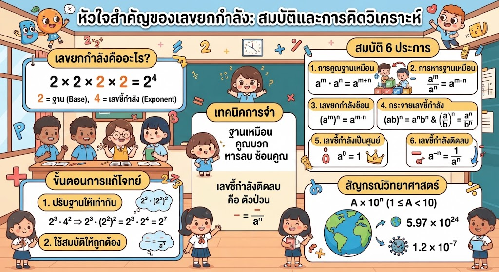

เลขยกกำลังคือการคูณซ้ำของฐาน (Base) ตามจำนวนเลขชี้กำลัง (Exponent) ซึ่งสรุปสมบัติหลักได้ดังนี้:
กระบวนการคิด: ทุกครั้งที่เจอโจทย์เลขยกกำลัง ขั้นตอนสำคัญที่สุดคือการ "ปรับฐานให้เท่ากัน" ก่อนเริ่มคำนวณ หากฐานต่างกันให้มองหาความสัมพันธ์ของเลขนั้นๆ เช่น 4, 8, 16 ล้วนอยู่ในฐาน 2 ทั้งสิ้น
เขียนโดย พระจอมเกล้าติวเตอร์